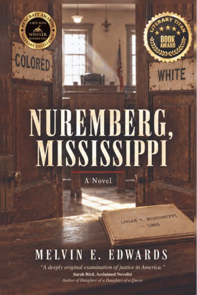
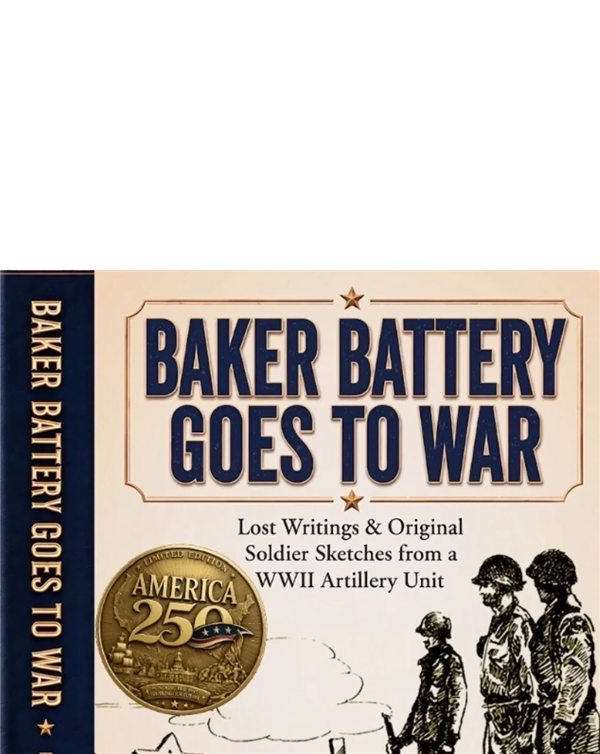

The case
Attorney Silas Thorn tries to apply the precedents of the Nuremberg Trials to a Mississippi sundown town.
A literary legal drama set in the mid twentieth century. It looks at how state sanctioned discrimination worked: the complicity of the legal profession, and the bureaucratic habits that made atrocity invisible through official procedure and professional courtesy.
“A deeply original examination of justice in America.”Sarah Bird, novelist
“Perfectly captures my own experience of growing up in Jim Crow Mississippi.”Dr. Alan E. Godwin, psychologist, author of Ties That Blind
On the record
“If you only have time to read one more book this year, it must be Nuremberg, Mississippi!” Readers’ Favorite, five stars.
Stories from Real Life
The podcast, and the 2026 Podcast of the Year at the American Writing Awards.
Latest episodeWhere the book has been
Nuremberg, Mississippi went on tour in Europe, to places tied to its themes of justice, law and public reckoning.
- Nuremberg
- London
- Amsterdam
- Innsbruck
- Heidelberg
- Lucerne
- Venice
- Rome
- Paris

Media Well Done
My imprint is publishing Baker Battery Goes to War by Patrick W. Naughton Jr.: a firsthand WWII story, nearly lost to history, with lost writings and original soldier sketches from an artillery unit.
The court is in session